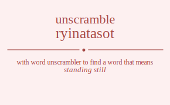

The word found after unscrambling ryinatasot means that standing still, not capable of being moved, .
ryinatasot has jumble solution. Please see which words made after unscrambling ryinatasot.
Daily Jumble Solution: stationary
You can use following links to see other word jumble solutions for the same day
caatul gyrbu ptnui ryinatasot srtoyp

Unscrambled 10 letter words from ryinatasot
stationary
Unscrambled 9 letter words from ryinatasot
antistory
Unscrambled 8 letter words from ryinatasot
tanistry
strontia
natatory
arnattos
sanitary
Unscrambled 7 letter words from ryinatasot
intorts
tritons
tyrants
aroynts
attorns
rattons
yttrias
ostiary
transit
station
aroints
rations
yantras
rattans
tantras
tartans
anattos
arnatto
striata
attains
antiars
artisan
tsarina
atonias
Unscrambled 6 letter words from ryinatasot
snotty
stotin
intort
triton
rosiny
intros
nitros
toasty
ottars
stator
tarots
tortas
tyrant
astony
aroynt
notary
attorn
ratton
rayons
tronas
yttria
artist
strait
strati
traits
tatsoi
aorist
aristo
ratios
satori
sanity
satiny
statin
taints
tanist
titans
instar
santir
strain
trains
aroint
ration
arsino
norias
astray
attars
strata
tatars
aortas
ratany
yantra
rattan
tantra
tartan
ratans
anatto
sonata
arista
raitas
riatas
tarsia
tiaras
attain
antiar
nairas
atonia
Unscrambled 5 letter words from ryinatasot
tryst
ryots
story
stroy
troys
tyros
torts
trots
stony
snort
toits
riots
rotis
tiros
torsi
trios
trois
nitty
stint
tints
noisy
yonis
irony
intro
nitro
irons
noirs
noris
ornis
rosin
tasty
ratty
tarty
artsy
satyr
stray
trays
start
tarts
stoat
toast
ottar
tarot
torta
ratos
roast
rotas
sorta
taros
toras
natty
antsy
nasty
tansy
yarns
rants
tarns
trans
atony
tanto
santo
rayon
trona
arson
roans
sonar
trait
airts
astir
sitar
stair
stria
tarsi
iotas
ostia
stoai
ratio
taint
titan
ayins
antis
saint
satin
stain
tains
rainy
riant
train
airns
naris
rains
ranis
sarin
noria
satay
attar
tatar
rayas
aorta
antas
antra
ratan
saran
anoas
atria
raita
riata
tiara
arias
raias
naira
Unscrambled 4 letter words from ryinatasot
toys
stot
tost
tots
ryot
tory
troy
tyro
tort
trot
rosy
orts
rots
sort
tors
tony
nosy
snot
tons
torn
sorn
tits
stir
toit
riot
roti
tiro
tori
trio
sori
tiny
tyin
tint
yins
nits
snit
tins
rins
yoni
into
ions
inro
iron
noir
nori
stay
stat
tats
arty
tray
tart
rays
ryas
arts
rats
star
tars
tsar
soya
oast
oats
stoa
taos
rato
rota
taro
tora
oars
osar
soar
sora
nays
ants
tans
nary
yarn
rant
tarn
nota
naos
roan
aits
sati
airy
airt
airs
rais
rias
sari
iota
ayin
anti
tain
ains
anis
sain
airn
rain
rani
naoi
raya
anta
anas
ansa
anoa
aria
raia
Unscrambled 3 letter words from ryinatasot
sty
try
toy
tot
soy
sot
ort
rot
tor
ors
syn
yon
not
ton
nos
ons
son
nor
tit
its
sit
tis
sir
sri
yin
nit
tin
ins
sin
rin
ion
att
tat
ays
say
sat
tas
ray
rya
yar
art
rat
tar
ars
ras
oat
tao
oar
ora
any
nay
ant
tan
ran
ait
ais
air
rai
ria
ain
ani
aas
ana
Unscrambled 2 letter words from ryinatasot
oy
yo
to
os
so
or
no
on
it
ti
is
si
oi
in
ay
ya
at
ta
as
ar
an
na
ai
aa